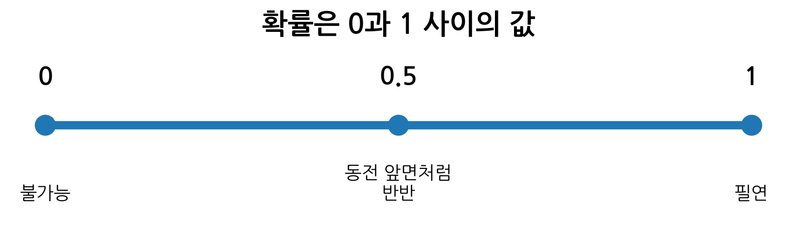
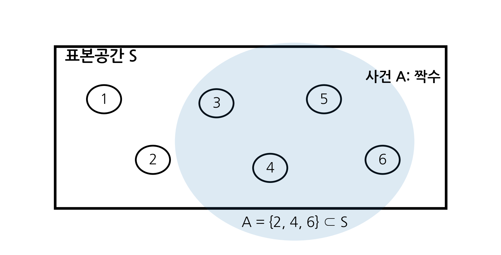
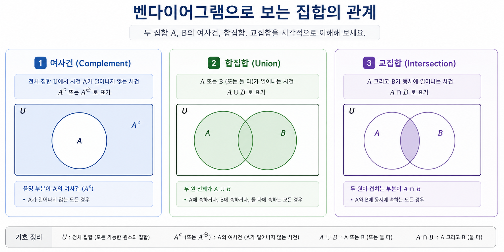
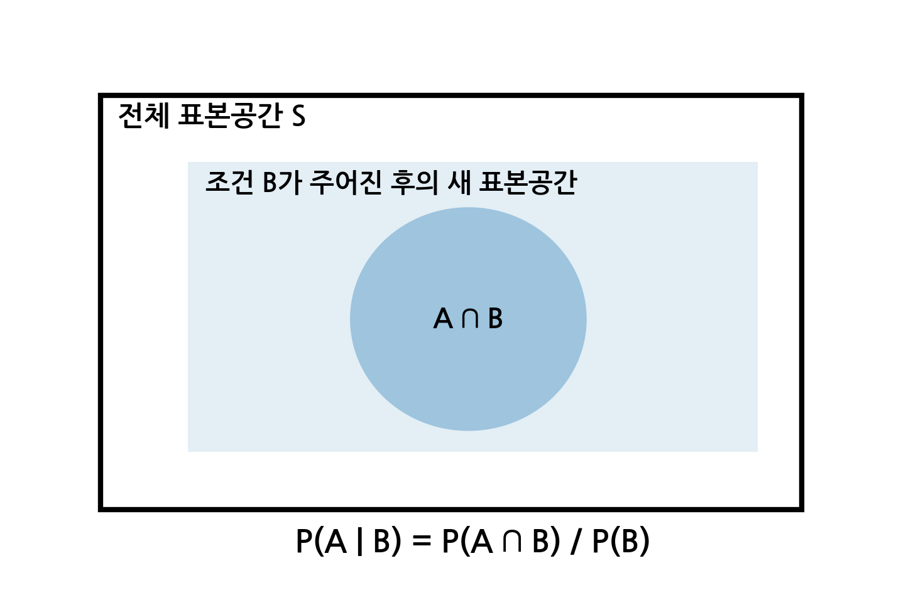
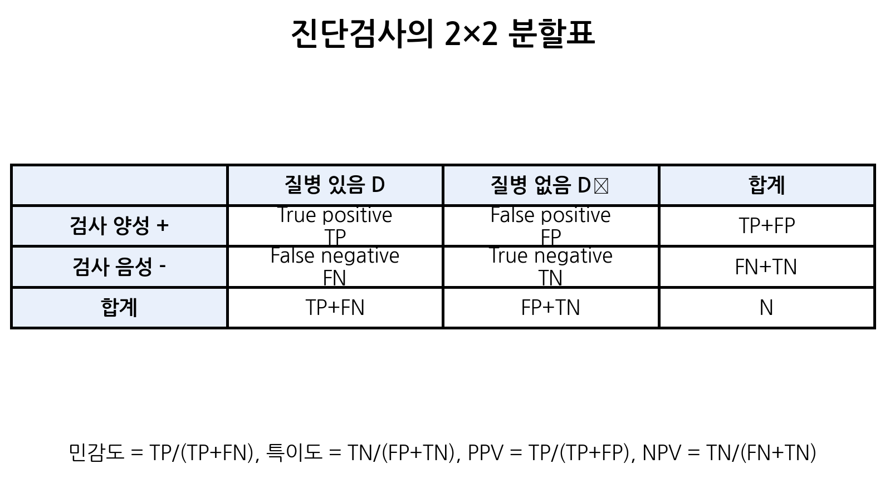
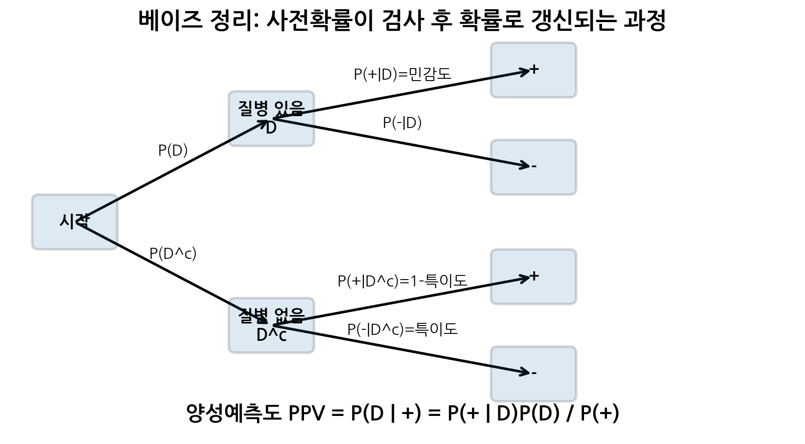

p_A <- 0.30
p_B <- 0.20
p_A_and_B <- 0.10
p_A_or_B <- p_A + p_B - p_A_and_B
p_A_or_B[1] 0.4바이오통계에서 확률(probability)은 단순히 동전이나 주사위를 다루는 계산법이 아니다.
확률은 불확실한 임상 현상을 수학적으로 표현하고, 제한된 자료에서 합리적인 판단을 내리기 위한 언어이다.
의학 연구와 임상 진료에는 늘 불확실성이 존재한다.
이러한 질문에 답하기 위해서는 확률의 기본 개념을 이해해야 한다.
이번 장에서는 확률의 정의, 표본공간과 사건, 확률의 기본 법칙, 조건부 확률, 독립사건, 진단검사의 성능 지표, 베이즈 정리를 학습한다. 특히 진단검사의 양성예측도와 음성예측도는 조건부 확률과 베이즈 정리가 실제 의학에서 어떻게 사용되는지 보여주는 대표적인 예이다.
이번 장은 다음 질문들을 중심으로 진행된다.
이번 장이 끝나면 학생들은 다음을 설명하고 계산할 수 있어야 한다.
확률은 어떤 사건이 발생할 가능성을 0과 1 사이의 실수로 표현한 값이다.
\[0 \leq P(A) \leq 1\]
여기서 \(A\)는 관심 있는 사건(event)이고, \(P(A)\)는 사건 \(A\)가 발생할 확률이다.
| 확률값 | 해석 | 예 |
|---|---|---|
| \(P(A)=0\) | 절대 발생하지 않음 | 주사위에서 7이 나옴 |
| \(P(A)=0.5\) | 발생 가능성과 비발생 가능성이 같음 | 공정한 동전의 앞면 |
| \(P(A)=1\) | 반드시 발생함 | 주사위에서 1부터 6 중 하나가 나옴 |

의학에서 확률은 단순한 가능성이 아니라 임상적 의사결정의 근거가 된다. 예를 들어 “검사 결과가 양성일 확률”, “질병이 있을 확률”, “치료 후 재발할 확률”은 모두 환자 상담, 검사 선택, 치료 전략 결정에 직접 연결된다.
의학 연구에서 확률은 크게 네 가지 방식으로 사용된다.
| 사용 맥락 | 확률적 질문 | 예 |
|---|---|---|
| 위험도 평가 | 이 집단에서 질병이 발생할 가능성은? | 흡연자의 폐암 발생 확률 |
| 진단 | 검사 결과가 양성일 때 실제 질병일 가능성은? | 양성예측도 |
| 치료 효과 | 치료군과 대조군의 차이가 우연일 가능성은? | p-value |
| 예후 예측 | 특정 환자가 향후 사건을 경험할 가능성은? | 5년 생존확률 |
예를 들어 어떤 질병의 유병률이 1%라는 말은, 해당 집단에서 무작위로 한 명을 선택했을 때 그 사람이 질병을 가지고 있을 확률이 약 0.01이라는 뜻이다.
\[P(\text{Disease}) = 0.01\]
확률은 개별 환자의 미래를 완벽하게 예언하지는 못한다. 그러나 같은 조건의 많은 사람을 반복적으로 관찰했을 때 나타나는 장기적 경향을 수량화한다.
표본공간(sample space)은 어떤 확률실험에서 가능한 모든 결과의 집합이다. 보통 \(S\) 또는 \(\Omega\)로 표기한다.
예를 들어 동전을 한 번 던지는 실험의 표본공간은 다음과 같다.
\[S = \{H, T\}\]
주사위를 한 번 던지는 실험의 표본공간은 다음과 같다.
\[S = \{1,2,3,4,5,6\}\]
의학적 예로, 어떤 진단검사의 결과만 관심이 있다면 표본공간은 다음과 같이 쓸 수 있다.
\[S = \{\text{Positive}, \text{Negative}\}\]
또한 환자의 실제 질병 상태와 검사 결과를 동시에 고려하면 표본공간은 더 자세해진다.
\[S = \{ (D,+), (D,-), (D^c,+), (D^c,-) \}\]
여기서 \(D\)는 질병 있음, \(D^c\)는 질병 없음, \(+\)는 검사 양성, \(-\)는 검사 음성을 의미한다.
사건(event)은 표본공간의 부분집합이다.
\[A \subseteq S\]
예를 들어 주사위를 한 번 던질 때 짝수가 나오는 사건을 \(A\)라고 하면,
\[A = \{2,4,6\}\]
이다.
표본공간과 사건의 관계는 다음 그림처럼 이해할 수 있다.

의학 연구에서는 사건을 다음과 같이 정의할 수 있다.
| 사건 | 의미 |
|---|---|
| \(D\) | 환자가 질병을 가지고 있음 |
| \(D^c\) | 환자가 질병을 가지고 있지 않음 |
| \(T+\) | 검사 결과가 양성임 |
| \(T-\) | 검사 결과가 음성임 |
| \(A\) | 치료에 반응함 |
| \(A^c\) | 치료에 반응하지 않음 |
사건을 명확히 정의해야 확률을 정확히 계산할 수 있다.
확률은 임의로 정하는 숫자가 아니라 세 가지 기본 규칙을 만족해야 한다. 이를 확률의 공리(axioms of probability)라고 한다.
모든 사건의 확률은 0 이상이다.
\[P(A) \geq 0\]
확률은 가능성의 크기이므로 음수가 될 수 없다.
표본공간 전체가 발생할 확률은 1이다.
\[P(S)=1\]
어떤 확률실험을 수행하면 표본공간에 포함된 결과 중 하나는 반드시 발생한다.
서로 겹치지 않는 사건들 \(A_1, A_2, A_3, \ldots\)에 대해 다음이 성립한다.
\[P(A_1 \cup A_2 \cup A_3 \cup \cdots) = P(A_1)+P(A_2)+P(A_3)+\cdots\]
단, 이 식은 사건들이 서로 배반(mutually exclusive)일 때 적용된다.
\[A_i \cap A_j = \emptyset \quad (i \neq j)\]
예를 들어 주사위를 던져 1이 나오는 사건과 2가 나오는 사건은 동시에 일어날 수 없으므로 배반사건이다.
모든 결과가 동일하게 일어날 가능성이 있을 때, 사건 \(A\)의 확률은 다음과 같이 계산한다.
\[P(A)= \frac{\text{사건 } A \text{에 포함되는 결과의 수}} {\text{표본공간 전체 결과의 수}}\]
예를 들어 공정한 주사위를 한 번 던질 때 짝수가 나올 확률은 다음과 같다.
\[S=\{1,2,3,4,5,6\}\]
\[A=\{2,4,6\}\]
따라서
\[P(A)=\frac{3}{6}=\frac{1}{2}=0.5\]
그러나 의학 자료에서는 모든 결과가 동일한 확률을 갖는 경우가 드물다. 예를 들어 검사 양성과 음성의 확률은 질병 유병률, 검사 성능, 대상자의 특성에 따라 달라진다. 따라서 실제 바이오통계에서는 표본자료나 모형을 통해 확률을 추정하는 경우가 많다.
확률 계산에서 사건은 집합으로 표현된다. 따라서 집합의 관계를 이해하면 확률 공식도 훨씬 쉽게 이해할 수 있다.
아래 그림은 두 사건 \(A\), \(B\)의 여사건, 합집합, 교집합을 시각적으로 보여준다.

사건 \(A\)의 여사건(complement)은 \(A\)가 일어나지 않는 사건이다. \(A^c\) 또는 \(A^\complement\)로 표기한다.
\[A^c = \{\omega \in S: \omega \notin A\}\]
여사건의 확률은 다음과 같다.
\[P(A^c)=1-P(A)\]
예를 들어 어떤 질병의 유병률이 0.1이면,
\[P(D)=0.1\]
질병이 없을 확률은 다음과 같다.
\[P(D^c)=1-P(D)=1-0.1=0.9\]
두 사건 \(A\)와 \(B\)의 합집합(union)은 \(A\) 또는 \(B\)가 일어나는 사건이다.
\[A \cup B\]
여기서 “또는”은 둘 중 하나만 일어나는 경우뿐 아니라 둘 다 일어나는 경우도 포함한다. 즉 통계학에서 \(A \cup B\)는 “\(A\) 또는 \(B\) 또는 둘 다”를 의미한다.
예를 들어 \(A\)를 고혈압이 있는 사건, \(B\)를 당뇨가 있는 사건이라고 하자. 그러면 \(A \cup B\)는 고혈압이 있거나 당뇨가 있거나 둘 다 있는 사건이다.
두 사건 \(A\)와 \(B\)의 교집합(intersection)은 \(A\)와 \(B\)가 동시에 일어나는 사건이다.
\[A \cap B\]
예를 들어 \(A\)를 고혈압이 있는 사건, \(B\)를 당뇨가 있는 사건이라고 하면 \(A \cap B\)는 고혈압과 당뇨를 모두 가진 사건이다.
여사건 법칙은 다음과 같다.
\[P(A^c)=1-P(A)\]
이 식은 매우 자주 사용된다. 예를 들어 질병이 없을 확률, 치료에 실패할 확률, 검사 결과가 음성일 확률 등을 계산할 때 사용된다.
두 사건 \(A\)와 \(B\) 중 적어도 하나가 일어날 확률은 다음과 같다.
\[P(A \cup B) = P(A)+P(B)-P(A \cap B)\]
왜 교집합을 빼야 할까?
\(P(A)+P(B)\)를 계산하면 \(A\)와 \(B\)가 동시에 일어나는 부분, 즉 \(A \cap B\)가 두 번 더해진다. 따라서 한 번을 빼 주어야 한다.
합집합은 서로 겹치지 않는 세 부분으로 나눌 수 있다.
\[A \cup B = (A \cap B^c) \cup (A^c \cap B) \cup (A \cap B)\]
세 부분은 서로 겹치지 않으므로,
\[P(A \cup B) = P(A \cap B^c)+P(A^c \cap B)+P(A \cap B)\]
또한
\[P(A)=P(A \cap B^c)+P(A \cap B)\]
\[P(B)=P(A^c \cap B)+P(A \cap B)\]
따라서
\[P(A)+P(B) = P(A \cap B^c)+P(A^c \cap B)+2P(A \cap B)\]
여기서 교집합이 한 번 더해져 있으므로,
\[P(A \cup B) = P(A)+P(B)-P(A \cap B)\]
이다.
두 사건 \(A\)와 \(B\)가 동시에 일어날 수 없으면 배반사건(mutually exclusive events)이라고 한다.
\[A \cap B = \emptyset\]
이때
\[P(A \cap B)=0\]
이므로 덧셈법칙은 다음처럼 단순해진다.
\[P(A \cup B) = P(A)+P(B)\]
예를 들어 한 번의 주사위 던지기에서 1이 나오는 사건과 2가 나오는 사건은 배반사건이다.
어떤 성인 집단에서 고혈압이 있는 사건을 \(A\), 당뇨가 있는 사건을 \(B\)라고 하자.
\[P(A)=0.30\]
\[P(B)=0.20\]
\[P(A \cap B)=0.10\]
고혈압 또는 당뇨가 있을 확률은 다음과 같다.
\[P(A \cup B) = P(A)+P(B)-P(A \cap B)\]
\[= 0.30+0.20-0.10 = 0.40\]
즉 이 집단에서 고혈압 또는 당뇨가 있는 사람의 비율은 40%이다.
조건부 확률(conditional probability)은 어떤 사건 \(B\)가 이미 일어났다는 조건하에서 사건 \(A\)가 일어날 확률이다.
\[P(A \mid B) = \frac{P(A \cap B)}{P(B)} \quad (P(B)>0)\]
여기서 \(P(A \mid B)\)는 “\(B\)가 주어졌을 때 \(A\)의 확률”이라고 읽는다.

조건부 확률의 핵심은 표본공간이 바뀐다는 것이다. 전체 집단이 아니라 \(B\)가 일어난 사람들만 놓고 \(A\)의 비율을 계산한다.
예를 들어 어떤 집단에서 다음과 같은 정보가 있다고 하자.
그러면 당뇨 환자 중 고혈압이 있을 확률은 다음과 같다.
\[P(A \mid B) = \frac{P(A \cap B)}{P(B)} = \frac{0.10}{0.20} = 0.50\]
즉 전체 집단에서 고혈압과 당뇨가 모두 있는 사람은 10%이지만, 당뇨 환자만 놓고 보면 그중 50%가 고혈압을 가지고 있다.
이처럼 조건부 확률은 “어떤 기준으로 분모를 잡는가”가 핵심이다.
어떤 질병의 유병률이 낮고 검사 정확도가 높다고 하자. 검사 결과가 양성이라면 환자는 실제로 질병이 있을 가능성이 매우 높다고 생각하기 쉽다.
그러나 반드시 그렇지는 않다.
질병이 드문 경우에는 질병이 없는 사람이 훨씬 많다. 따라서 특이도가 높더라도 질병이 없는 사람들 중 일부에서 발생하는 위양성(false positive)이 실제 환자의 참양성(true positive)보다 많아질 수 있다.
이 현상은 조건부 확률을 혼동할 때 나타나는 대표적인 오류이다.
\[P(\text{양성} \mid \text{질병}) \neq P(\text{질병} \mid \text{양성})\]
왼쪽은 민감도이고, 오른쪽은 양성예측도이다. 두 확률은 서로 다르다.
조건부 확률의 정의에서 다음을 얻을 수 있다.
\[P(A \mid B) = \frac{P(A \cap B)}{P(B)}\]
양변에 \(P(B)\)를 곱하면,
\[P(A \cap B) = P(A \mid B)P(B)\]
마찬가지로,
\[P(A \cap B) = P(B \mid A)P(A)\]
따라서 곱셈법칙은 다음과 같다.
두 사건 \(A\)와 \(B\)가 독립(independent)이라는 것은 한 사건의 발생 여부가 다른 사건의 확률을 바꾸지 않는다는 뜻이다.
즉 다음이 성립하면 \(A\)와 \(B\)는 독립이다.
\[P(A \mid B)=P(A)\]
또는 동등하게,
\[P(B \mid A)=P(B)\]
조건부 확률의 정의를 이용하면 독립사건에서는 다음도 성립한다.
\[P(A \cap B)=P(A)P(B)\]
\(A\)와 \(B\)가 독립이라고 하자. 그러면
\[P(A \mid B)=P(A)\]
이다.
조건부 확률의 정의에 의해,
\[P(A \mid B) = \frac{P(A \cap B)}{P(B)}\]
이므로,
\[\frac{P(A \cap B)}{P(B)} = P(A)\]
양변에 \(P(B)\)를 곱하면,
\[P(A \cap B) = P(A)P(B)\]
이다.
따라서 독립사건에서는 두 사건이 동시에 일어날 확률이 각 사건의 확률의 곱과 같다.
학생들이 자주 혼동하는 개념이 독립사건과 배반사건이다.
| 구분 | 의미 | 수식 |
|---|---|---|
| 독립사건 | 한 사건이 다른 사건의 확률을 바꾸지 않음 | \(P(A \cap B)=P(A)P(B)\) |
| 배반사건 | 두 사건이 동시에 일어날 수 없음 | \(P(A \cap B)=0\) |
두 사건의 확률이 모두 양수라면, 배반사건은 독립사건이 아니다.
예를 들어 한 번의 주사위 던지기에서 1이 나오는 사건과 2가 나오는 사건은 동시에 일어날 수 없으므로 배반사건이다. 그러나 1이 나오지 않았다는 정보는 2가 나올 가능성에 영향을 준다. 따라서 독립은 아니다.
흡연과 폐암 발생은 일반적으로 독립이라고 보기 어렵다. 흡연 여부를 알면 폐암 발생 확률이 달라지기 때문이다.
\[P(\text{폐암} \mid \text{흡연}) \neq P(\text{폐암})\]
반면 서로 다른 두 환자에게서 독립적으로 발생하는 동전 던지기와 같은 무작위 배정 결과는 독립으로 가정할 수 있다.
임상 연구에서 독립성 가정은 매우 중요하다. 예를 들어 같은 가족 구성원, 같은 병동의 환자, 반복 측정 자료는 서로 독립이 아닐 수 있다. 이런 자료를 독립이라고 가정하고 분석하면 표준오차와 p-value가 왜곡될 수 있다.
진단검사는 확률의 임상적 적용을 가장 잘 보여주는 예이다.
검사 결과는 보통 양성 또는 음성이고, 실제 질병 상태도 있음 또는 없음으로 나눌 수 있다. 이 두 축을 결합하면 2×2 분할표가 만들어진다.

| 실제 질병 있음 | 실제 질병 없음 | |
|---|---|---|
| 검사 양성 | 참양성 TP | 위양성 FP |
| 검사 음성 | 위음성 FN | 참음성 TN |
이 표에서 네 가지 경우는 다음과 같다.
| 용어 | 의미 |
|---|---|
| TP, true positive | 질병이 있고 검사도 양성 |
| FP, false positive | 질병은 없지만 검사 양성 |
| FN, false negative | 질병은 있지만 검사 음성 |
| TN, true negative | 질병이 없고 검사도 음성 |
민감도(sensitivity)는 실제 질병이 있는 사람 중 검사 양성으로 나온 비율이다.
\[\text{Sensitivity} = P(T+ \mid D) = \frac{TP}{TP+FN}\]
민감도가 높은 검사는 질병이 있는 사람을 놓치지 않는 데 유리하다. 따라서 선별검사(screening test)에서는 민감도가 중요하다.
특이도(specificity)는 실제 질병이 없는 사람 중 검사 음성으로 나온 비율이다.
\[\text{Specificity} = P(T- \mid D^c) = \frac{TN}{FP+TN}\]
특이도가 높은 검사는 질병이 없는 사람을 양성으로 잘못 분류하지 않는 데 유리하다. 따라서 확진검사(confirmatory test)에서는 특이도가 중요하다.
양성예측도(positive predictive value, PPV)는 검사 양성인 사람 중 실제 질병이 있는 비율이다.
\[\text{PPV} = P(D \mid T+) = \frac{TP}{TP+FP}\]
양성예측도는 환자 입장에서 매우 직관적인 질문에 답한다.
“검사가 양성인데, 제가 실제로 병에 걸렸을 확률은 얼마인가?”
음성예측도(negative predictive value, NPV)는 검사 음성인 사람 중 실제 질병이 없는 비율이다.
\[\text{NPV} = P(D^c \mid T-) = \frac{TN}{FN+TN}\]
음성예측도는 다음 질문에 답한다.
“검사가 음성인데, 제가 실제로 병이 없을 확률은 얼마인가?”
민감도와 양성예측도는 모두 “양성”이라는 단어와 관련되어 있지만 서로 다른 조건부 확률이다.
\[\text{Sensitivity}=P(T+ \mid D)\]
\[\text{PPV}=P(D \mid T+)\]
민감도는 질병이 있는 사람을 기준으로 검사 결과를 보는 확률이고, 양성예측도는 검사 양성인 사람을 기준으로 실제 질병 여부를 보는 확률이다.
따라서 두 확률은 일반적으로 같지 않다.
베이즈 정리(Bayes’ theorem)는 조건부 확률의 방향을 바꾸어 계산할 때 사용된다.
진단검사에서 우리는 종종 다음 값을 알고 있다.
\[P(T+ \mid D)\]
이는 질병이 있을 때 검사 양성일 확률, 즉 민감도이다.
하지만 환자가 실제로 궁금해하는 것은 다음 확률이다.
\[P(D \mid T+)\]
이는 검사 양성일 때 실제 질병이 있을 확률, 즉 양성예측도이다.
베이즈 정리는 이 두 확률을 연결한다.

베이즈 정리는 다음과 같다.
\[P(A \mid B) = \frac{P(B \mid A)P(A)}{P(B)}\]
여기서 \(P(B)\)는 전체확률법칙을 이용해 계산할 수 있다.
\[P(B) = P(B \mid A)P(A) + P(B \mid A^c)P(A^c)\]
따라서 다음과 같이 쓸 수 있다.
곱셈법칙에 의해 다음이 성립한다.
\[P(A \cap B) = P(A \mid B)P(B)\]
또한 같은 교집합을 다른 순서로 쓰면,
\[P(A \cap B) = P(B \mid A)P(A)\]
따라서
\[P(A \mid B)P(B) = P(B \mid A)P(A)\]
양변을 \(P(B)\)로 나누면,
\[P(A \mid B) = \frac{P(B \mid A)P(A)}{P(B)}\]
이다.
질병 사건을 \(D\), 검사 양성 사건을 \(T+\)라고 하자. 그러면 양성예측도는 다음과 같다.
\[P(D \mid T+) = \frac{P(T+ \mid D)P(D)} {P(T+)}\]
여기서
\[P(T+) = P(T+ \mid D)P(D) + P(T+ \mid D^c)P(D^c)\]
이다.
\(P(T+ \mid D)\)는 민감도이고, \(P(T+ \mid D^c)\)는 위양성률이다.
\[P(T+ \mid D^c)=1-\text{Specificity}\]
따라서 양성예측도는 다음과 같이 표현된다.
\[\text{PPV} = \frac{\text{Sensitivity}\times \text{Prevalence}} {\text{Sensitivity}\times \text{Prevalence} + (1-\text{Specificity})\times(1-\text{Prevalence})}\]
이 식은 매우 중요하다. 양성예측도는 검사 자체의 성능뿐 아니라 질병의 유병률에 강하게 영향을 받는다.
어떤 질병의 유병률이 1%이고, 검사 민감도는 95%, 특이도는 95%라고 하자.
\[P(D)=0.01\]
\[P(T+ \mid D)=0.95\]
\[P(T- \mid D^c)=0.95\]
그러면 위양성률은 다음과 같다.
\[P(T+ \mid D^c)=1-0.95=0.05\]
검사 양성일 때 실제 질병이 있을 확률은 다음과 같다.
\[P(D \mid T+) = \frac{0.95 \times 0.01} {0.95 \times 0.01 + 0.05 \times 0.99}\]
분자는 다음과 같다.
\[0.95 \times 0.01 = 0.0095\]
분모는 다음과 같다.
\[0.0095 + 0.0495 = 0.059\]
따라서
\[P(D \mid T+) = \frac{0.0095}{0.059} \approx 0.161\]
즉 검사 민감도와 특이도가 모두 95%로 높더라도, 질병이 매우 드물면 양성예측도는 약 16.1%에 불과하다.
베이즈 정리는 자연빈도(natural frequency)로 보면 더 직관적이다.
10,000명을 검사한다고 하자.
| 구분 | 계산 | 예상 인원 |
|---|---|---|
| 실제 질병 있음 | \(10{,}000 \times 0.01\) | 100명 |
| 실제 질병 없음 | \(10{,}000 \times 0.99\) | 9,900명 |
| 질병 있음 중 검사 양성 | \(100 \times 0.95\) | 95명 |
| 질병 없음 중 검사 양성 | \(9{,}900 \times 0.05\) | 495명 |
검사 양성자는 총 590명이다.
\[95+495=590\]
이 중 실제 질병이 있는 사람은 95명이다.
\[\text{PPV} = \frac{95}{590} \approx 0.161\]
따라서 검사 양성자 중 실제 질병이 있는 비율은 약 16.1%이다.
이 예제는 유병률이 진단검사의 실제 해석에 얼마나 중요한지를 보여준다.
고혈압 사건을 \(A\), 당뇨 사건을 \(B\)라고 하자.
\[P(A)=0.30,\quad P(B)=0.20,\quad P(A \cap B)=0.10\]
고혈압 또는 당뇨가 있을 확률은 다음과 같이 계산한다.
p_A <- 0.30
p_B <- 0.20
p_A_and_B <- 0.10
p_A_or_B <- p_A + p_B - p_A_and_B
p_A_or_B[1] 0.4고혈압이 있을 확률이 0.30이라면 고혈압이 없을 확률은 다음과 같다.
p_A <- 0.30
p_not_A <- 1 - p_A
p_not_A[1] 0.7당뇨가 있는 사람 중 고혈압이 있을 확률을 계산해 보자.
\[P(A \mid B) = \frac{P(A \cap B)}{P(B)}\]
p_A_and_B <- 0.10
p_B <- 0.20
p_A_given_B <- p_A_and_B / p_B
p_A_given_B[1] 0.5두 사건이 독립이라면 다음이 성립한다.
\[P(A \cap B)=P(A)P(B)\]
p_A <- 0.30
p_B <- 0.20
p_A_and_B <- 0.10
p_A * p_B[1] 0.06p_A_and_B[1] 0.1여기서 \(P(A)P(B)=0.06\)이고 실제 \(P(A \cap B)=0.10\)이므로 두 사건은 독립이 아니다.
다음과 같은 2×2 분할표가 있다고 하자.
| 질병 있음 | 질병 없음 | |
|---|---|---|
| 검사 양성 | 95 | 495 |
| 검사 음성 | 5 | 9405 |
R에서 민감도, 특이도, 양성예측도, 음성예측도를 계산하면 다음과 같다.
TP <- 95
FP <- 495
FN <- 5
TN <- 9405
sensitivity <- TP / (TP + FN)
specificity <- TN / (FP + TN)
ppv <- TP / (TP + FP)
npv <- TN / (FN + TN)
sensitivity[1] 0.95specificity[1] 0.95ppv[1] 0.1610169npv[1] 0.9994687유병률, 민감도, 특이도를 입력하면 양성예측도를 계산하는 함수를 만들어 보자.
calc_ppv <- function(prevalence, sensitivity, specificity) {
numerator <- sensitivity * prevalence
denominator <- sensitivity * prevalence +
(1 - specificity) * (1 - prevalence)
numerator / denominator
}
calc_ppv(
prevalence = 0.01,
sensitivity = 0.95,
specificity = 0.95
)[1] 0.1610169유병률이 달라질 때 양성예측도가 어떻게 바뀌는지 비교할 수도 있다.
prevalence_values <- c(0.001, 0.01, 0.05, 0.10, 0.30)
ppv_values <- calc_ppv(
prevalence = prevalence_values,
sensitivity = 0.95,
specificity = 0.95
)
data.frame(
prevalence = prevalence_values,
ppv = ppv_values
) prevalence ppv
1 0.001 0.01866405
2 0.010 0.16101695
3 0.050 0.50000000
4 0.100 0.67857143
5 0.300 0.89062500확률의 장기적 의미를 확인하기 위해 공정한 동전을 여러 번 던져 보자.
set.seed(123)
coin <- sample(
x = c("H", "T"),
size = 1000,
replace = TRUE,
prob = c(0.5, 0.5)
)
table(coin)coin
H T
493 507 prop.table(table(coin))coin
H T
0.493 0.507 시행 횟수가 커질수록 앞면의 비율은 0.5에 가까워지는 경향을 보인다.
공정한 주사위를 6000번 던져 각 눈의 상대빈도를 확인해 보자.
set.seed(123)
dice <- sample(
x = 1:6,
size = 6000,
replace = TRUE
)
table(dice)dice
1 2 3 4 5 6
1010 1047 987 996 966 994 prop.table(table(dice))dice
1 2 3 4 5 6
0.1683333 0.1745000 0.1645000 0.1660000 0.1610000 0.1656667 각 눈의 상대빈도는 대략 \(1/6\)에 가까워진다.
유병률 1%, 민감도 95%, 특이도 95%인 검사 상황을 10,000명에서 시뮬레이션해 보자.
set.seed(123)
n <- 10000
prevalence <- 0.01
sensitivity <- 0.95
specificity <- 0.95
disease <- rbinom(n, size = 1, prob = prevalence)
test_positive <- ifelse(
disease == 1,
rbinom(n, size = 1, prob = sensitivity),
rbinom(n, size = 1, prob = 1 - specificity)
)
table_result <- table(
test = test_positive,
disease = disease
)
table_result disease
test 0 1
0 9414 4
1 485 97prop.table(table_result) disease
test 0 1
0 0.9414 0.0004
1 0.0485 0.0097TP <- table_result["1", "1"]
FP <- table_result["1", "0"]
TP / (TP + FP)[1] 0.1666667시뮬레이션 결과는 매번 조금씩 달라지지만, 양성예측도는 이론값인 약 0.161 근처에 나타난다.